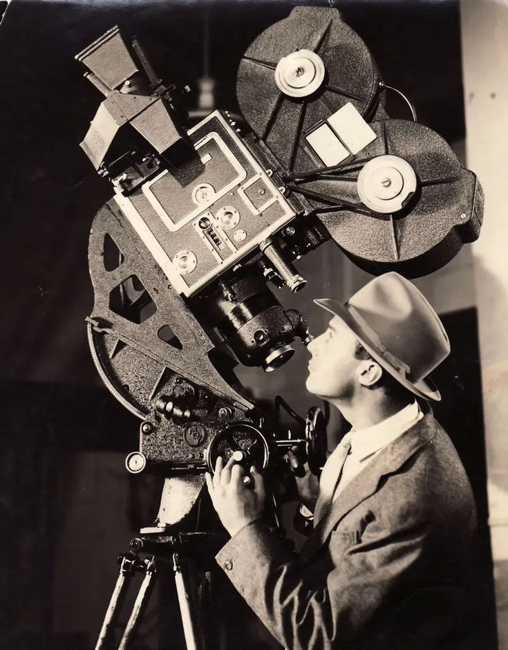

your gateway to the magic of movies. Whether you're a die-hard film enthusiast or a curious
newcomer, this site offers a deep dive into the art, history, and evolution of cinema.
Explore iconic films, legendary directors, behind-the-scenes stories, and the cultural impact
of movies from around the globe. From Hollywood classics to international masterpieces,
this is where storytelling comes alive. Grab your popcorn — the journey begins here.
Cinema, often referred to as the seventh art, is a powerful medium of storytelling that combines visuals, sound, and emotion to create immersive experiences. Since its invention in the late 19th century, cinema has evolved from silent black-and-white films to today's high-tech blockbusters and thought-provoking independent movies. It serves not only as entertainment but also as a reflection of culture, history, and human nature. Through cinema, directors and writers can explore complex themes, share diverse perspectives, and connect audiences around the world. As both an art form and an industry, cinema continues to shape the way we see the world and ourselves.
And as technology advances, cinema continues to evolve—offering new ways to experience stories through animation, digital effects, and streaming platforms. It remains a vital part of global culture, inspiring, challenging, and uniting audiences everywhere.

film camera from 1943
designed by James Hervertsheld
The origin of cinema can be traced back to the late 19th century, during a time of rapid technological innovation and artistic exploration. Inventors like Thomas Edison in the United States and the Lumière brothers in France played key roles in developing early motion picture devices. While Edison created the Kinetoscope for individual viewing, the Lumière brothers invented the Cinématographe, a camera and projector that allowed films to be shown to large audiences. In 1895, they held one of the first public film screenings in Paris, showcasing short, silent clips such as Workers Leaving the Factory.
These early films, often less than a minute long, captured simple, real-life scenes and amazed viewers who had never seen moving images before. Though basic, they laid the foundation for a new form of storytelling. As interest in the medium grew, filmmakers began to experiment with narrative, camera movement, and special effects. Pioneers like Georges Méliès used cinema to create fantastical stories, while others explored editing techniques to shape more complex plots. From its humble beginnings as a scientific curiosity, cinema quickly evolved into a global art form that would go on to influence culture, society, and the way we perceive the world.
As cinema developed in the early 20th century, it began to take on a more structured form, with longer films, scripted narratives, and recognizable genres such as comedy, drama, and action. The silent film era saw the rise of iconic stars like Charlie Chaplin and directors such as D.W. Griffith, who introduced groundbreaking techniques like cross-cutting and close-ups to enhance storytelling.